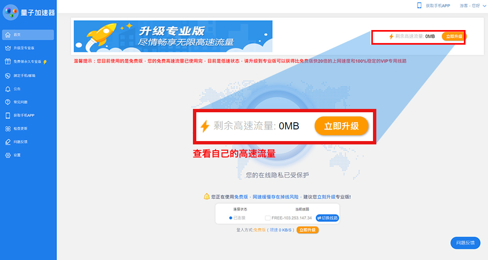

各位用户好，这里有一份量子加速器使用教程和常见问题自助查询文档，如果您在使用软件的过程中，遇到问题，您可以及时查阅这份文档，它能帮助您解决不少问题。
1、 如果您的速度很慢，很可能是因为您的高速流量已经用完了，请点击客户端右上角查看 （如图所示）
2、免费版用户刚开始使用时，都会赠送100MB高速流量，100MB高速流量用完后就会进入低速流量线路，平均速度限速在10KB/秒。 （如下图），我们用一部46分时长，文件大小199MB的720P高清视频，来给大家举例说明：

- 我们先把视频大小换算成KB，199MB=199*1024KB=203,776KB
- 免费版的速度是10KB/秒，那么203,776KB除以10KB=20,377秒，20,377秒等于5.65小时。
说明：当您的速度是10KB/秒时，下载一部46分时长的高清视频，需要5.65小时。
- 专业版的速度是1MB/秒，那么199MB除以1MB等于199秒，199秒等于3分19秒
- 所以：当您的免费高速流量用完后，您的速度被限速到10KB/秒，几乎就无法观看视频，浏览网页的速度也会很慢。
- 专业版虽然是收费的，但是我们承诺他是物超所值的，所以我们还是真诚的建议您升级为专业版，（如下图所示）相比较于免费版，专业版连接的是VIP专属通道， 具有无限的高速流量，平均速度可达1MB每秒，且具有100%稳定性。不管是看4K高清视频，还是玩游戏都会有非常好的体验。
说明：当您的速度是1MB/秒时，下载一部46分时长的高清视频，需要3分19秒
备注：为什么我们的VIP是1MB/S，而不是更高的速率？
通常情况下您家里的电信宽带是10MB/S（电信100Mbps=10MB带宽），但这10MB/S只是代表您访问中国境内互联网的速率，您访问【国际互联网】的速率通常情况下只能达1MB/S，这是因为中国电信运营商对国际互联网出口带宽进行了限制，但是请放心，1MB/S 的速率已经完全足够流畅观看1080P视频和其他任何日常下载需求。
当您成为专业版后，您的平均速度就是1MB/秒，看高清视频，下载文件都很顺畅。 （如下图）